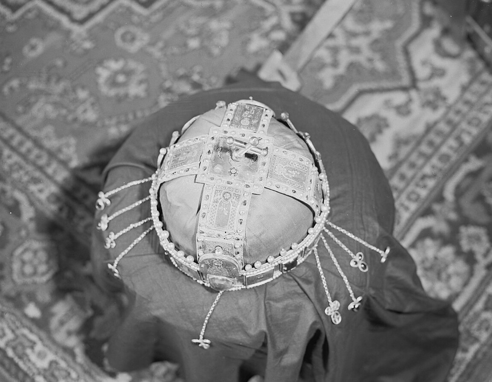
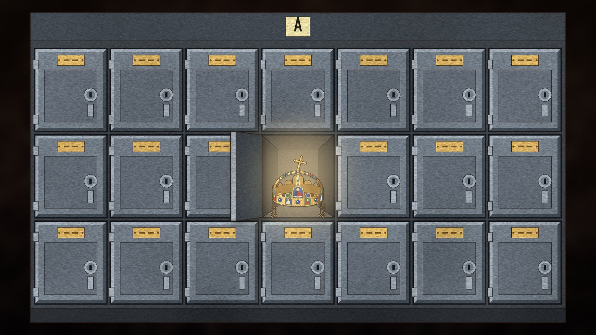

Miért őrizte Amerika 32 évig a magyar Szent Koronát?
1945 nyarán az amerikaiak kinyitották a magyar koronázási ládát, és csak egy kardot találtak benne. A korona útja egy benzineshordótól Fort Knoxon át a Parlamentig vezetett.

Augsburgba 1945. július 24-én értek meg a kulcsok, és az amerikaiak azonnal felnyitották a ládát, amelyet május óta őriztek. A magyar koronázási láda volt az. Csak egy kard volt benne.
A korona, a jogar és az országalma hiányzott. Innen indult az az amerikai őrizet, amelyben a korona 32 évet töltött. A rövid válasz arra, hogy miért ilyen sokáig: Amerika 1946-tól azt az álláspontot képviselte, hogy a korona nem hadizsákmány, hanem megőrzésre rábízott letét, és a kiadását a két ország viszonyának javulásához kötötte. A hosszabb válasz egy teherautón kezdődik.
Egy hordó Mattsee mellett
1945. március 27-ről 28-ra virradó éjjel Szálasi Ferenc utasítására Pajtás Ernő ezredes és hét koronaőr egy teherautóval, Kőszegről indulva kivitte a koronázási ékszereket az országból. Glant Tibor történész szerint ezzel megszegték az esküjüket, mert fogadalmuk része volt, hogy a koronát nem engedik kivinni az országból.
Az út Ausztrián át vezetett: március 28-án Mürzsteg, április 1-jén Mariazell, négy nappal később Attersee, végül Mattsee, ahol Szálasi kísérete is tartózkodott. Az osztrák falu mellett a koronaőrök egy kettéfűrészelt benzineshordóban elásták a koronát, a jogart és az országalmát. A hivatalos amerikai jelentések szerint ez április 26-án éjjel történt. A koronaőrök május 5-ét mondtak, de Glant ezt nyilvánvalóan tévesnek tartja. A források abban is eltérnek, mi maradt a ládában. Glant szerint a kard, Martin Mevius tanulmánya üres ládáról ír.
Május 7-én a Mattsee melletti Zellhofban tartózkodó koronaőrség egy pap útján jelezte az amerikaiaknak, hogy elfogatásra vár. A 7. amerikai hadsereg őrizetbe vette őket, a ládát pedig Augsburgba vitték.
A hordót Worth B. Andrews alhadnagy, két koronaőr, Pajtás és Borbély, valamint Daniel H. Scheel őrmester ásták ki: amerikai dzsippel mentek Mattsee-be. Az amerikai hivatalos beszámoló szerint a koronát, a jogart és az országalmát 1945. július 25-én délben adták át Kubala őrnagynak. A kiásás napja vitatott, ezért az amerikai őrizetet itt ettől az átadástól számoljuk.

Egy 2013-as, angol nyelvű magyar hírportál azt írta, hogy 1945. május 4-én egy amerikai gyalogoshadosztály szerezte meg a koronát Mattsee-ben. A források szerint május 7-én csak a ládát kapták meg, a koronát pedig július 25-én.
A koronázási palástot és a Szent Jobbot a 3. hadsereg egyik felderítő osztaga már június 17-én megtalálta. A Szent Jobbot Truman engedélyével még 1945-ben hazaküldték, az augusztus 20-i körmenetre. A korona nem ment vele.
Közel nyolc év Németországban, csaknem huszonöt Fort Knoxban
A korona július 31-én Heidelbergbe, augusztus 3-án a frankfurti Német Nemzeti Bankba került. 1945. szeptember 17-től a wiesbadeni műkincs-gyűjtőpontban amerikai muzeológusok őrizték. 1946. április 17-én Münchenbe vitték, 1949. május 12-én vissza a frankfurti trezorba, 1951. augusztus 21-én pedig Friedbergbe, az amerikai hadsereg európai főhadiszállására.
1953. március 11-én Bremerhavenben behajózták a General Greely nevű hajóra. A művelet a Klondike nevet kapta. A hajó március 21-én kötött ki Staten Islanden, a szállítmány március 23-án délután fél 4-kor ért Fort Knoxba.
Fort Knoxban az amerikai aranytartalékon kívül van néhány tárolóhelyiség is. A korona a külügy számára fenntartott egyikbe, az A szektor 31-es fülkéjébe került, a kulcs a külügy magyar referensénél volt. Itt maradt 1978. január 4-ig, 24 év 9 hónapig. A teljes amerikai őrizet 32 év 5 hónapig tartott. Az első közel nyolc évet a korona Németországban töltötte, tehát nem igaz, hogy végig Fort Knoxban volt.

Kié volt a korona?
Az 1946-ban rögzített amerikai álláspont szerint a koronát a koronaőrség adta át megőrzésre, vagyis nem hadizsákmány volt. A külügy hivatalos álláspontja szerint különleges státuszú magyar nemzeti tulajdon volt, amelyet az Egyesült Államok kormánya biztonsági letétként őrzött. A magyar fél ezt vitatta: szerinte fasiszták és háborús bűnösök juttatták amerikai kézre. Mevius a két nézetet két ellentétes jogi fikciónak nevezi.
1950-ben a korona belekeveredett a letartóztatott amerikai üzletember, Robert Vogeler ügyébe. Glant Tibor szerint a magyar kormány a szabadon bocsátásáért cserébe a korona kiadását is követelte, ez szivárgott ki, és a New York Times a címlapján hozta. Mevius tanulmánya szerint viszont a júniusi sajtóhírnek nem volt alapja, a korona addig szóba sem került, és a magyar tárgyaló csak szeptemberben hozta elő. Washington a koronát nem adta ki.
A hivatalos amerikai feltétel évekig az volt, hogy a visszaadás csak a kétoldalú kapcsolatok „lényeges javulása” esetén jöhet szóba. Közben számoltak az amerikai magyarok ellenállásával is. Magyarország többször visszakérte a koronát: egy 1972-es jogi elemzés 1948-ból, 1952-ből, 1964-ből és 1969-ből sorol fel esetet.
1977: a hidegháború maradványa
1977 márciusában a külügy kelet-európai irodája azt javasolta, hogy adják vissza a koronát. Az indoklás szerint a viszony érezhetően javult, és a legnagyobb kereskedelmi kedvezmény kérdését leszámítva a korona volt az egyetlen nagy megoldatlan kétoldalú probléma. A javaslat a hidegháború maradványának nevezte, és megjegyezte, hogy a helyzetet gyakran ahhoz hasonlították, mintha egy másik ország tartaná magánál a Szabadság-harangot.
A hivatalos amerikai feltétel évekig az volt, hogy a visszaadás csak a kétoldalú kapcsolatok „lényeges javulása” esetén jöhet szóba.
Június 3-án Cyrus Vance külügyminiszter titkos feljegyzésben, Carter elnöknek írva erkölcsileg és jogilag védhetetlennek nevezte a további visszatartást. Emlékeztetett rá, hogy nyilvánosan elismerték: a korona a magyar nemzet tulajdona. Ha Magyarország hivatalosan visszakéri, írta, az Egyesült Államoknak nincs jogalapja megtagadni. Brzezinski kezdetben ellenezte a lépést, Vance végül elérte, hogy az elnök hozzájáruljon a tárgyalásokhoz.
Október 1-jén, az ENSZ-közgyűlés idején Vance közölte Puja Frigyes magyar külügyminiszterrel, hogy az Egyesült Államok kész visszaadni a koronát. A részleteket a budapesti nagykövet tárgyalta le. Az október 26-i utasítás alapfeltételei szerint a ceremónián a magyar társadalom különböző csoportjai, köztük a katolikus bíboros-prímás is részt vesznek, a koronát pedig tartósan, nyilvánosan, egy, a kommunista párthoz nem kötődő történelmi helyen állítják ki. Az államfőnek vagy megbízottjának akarták átadni, „a magyar nemzet és nép tulajdonaként”. A nagykövetnek szóló belső megjegyzés szerint Kádár Jánosnak semmiképp.
Amerikában tiltakoztak. Mary Rose Oakar képviselő törvényjavaslatot sürgetett, amely kongresszusi jóváhagyáshoz kötötte volna a visszaadást, és november 29-én Washingtonban a korabeli lapok szerint 2500–3000 ember tüntetett, 80 amerikai magyar szervezet képviseletében. A döntést viszont támogatta Nagy Ferenc volt miniszterelnök és Király Béla, az 1956-os Nemzetőrség parancsnoka. A két ország elnökének nevében kiadott közös közleményt december 15-én hozták nyilvánosságra. Curtis és Dole szenátor pereltek, de az utolsó keresetet a Legfelső Bíróság egyik bírája, Byron R. White 1978. január 3-án elutasította.
Amikor Amerika visszaadta a koronát, a magyar nemzet és nép tulajdonaként adta át, nem Kádár Jánosnak, hanem az Országgyűlés elnökének, Apró Antalnak.
Vörös bársony a Kupolacsarnokban
Másnap, január 4-én különgép vitte el a regáliákat Fort Knoxból. Január 5-én hajnalban az Air Force Two indult az Andrews légibázisról a koronával és a delegációval, és este 10-kor, félórás késéssel érkezett Budapestre. A repülőtéren Lékai László bíboros is várta. Az 1945 márciusában kivitt korona csaknem 33 év után, 1978 januárjában ért haza.
A 25 fős amerikai küldöttséget Vance vezette, Carter személyes képviselőjeként, és tagja volt Szent-Györgyi Albert Nobel-díjas tudós is. Január 6-án délután 4-kor, a Parlament Kupolacsarnokában a koronát vörös bársonnyal letakart, kerekes asztalon tolták be. A két himnusz után Vance beszélt. Beszédéből egy mondat, Glant Tibor magyar szövegében: „Mi ezt a felelősséget annak tudatában vállaltuk, hogy a korona a magyar nép tulajdona.” Amikor Amerika visszaadta a koronát, a magyar nemzet és nép tulajdonaként adta át, nem Kádár Jánosnak, hanem az Országgyűlés elnökének, Apró Antalnak. Apró úgy fogalmazott, hogy az egész magyar nép nevében veszi át a nemzeti ereklyéket. Az ünnepséget a Szózat zárta.
Az amerikai külügyi iratkiadás, a FRUS szerkesztői szerint a korona visszaadása fordulópont volt a két ország kapcsolatában. Egy közvélemény-kutatás szerint a lakosság 85%-a látta a közvetítést. A koronát a Nemzeti Múzeumban állították ki, és az első két évben közel kétmillióan nézték meg.
 Videón is megnézhetedMiért őrizte Amerika 32 évig a magyar Szent Koronát?
Videón is megnézhetedMiért őrizte Amerika 32 évig a magyar Szent Koronát?
Források
- Glant Tibor (2018): A Szent Korona amerikai kalandja és hazatérése. 2. jav. kiadás, Debreceni Egyetemi Kiadó
- Foreign Relations of the United States, 1977–1980, Volume XX (Eastern Europe)
- Martin Mevius (2011): Koronát Rákosinak! A Vogeler-ügy, a Szent Korona és a magyar szocialista rendszer nemzet(köz)i legitimációja, 1945–1978. Múltunk 2011/2
- ADST (2014): A Crown for Hungary
- AFSA: The Safe Return of the Hungarian Crown
A cikk a videó állítástáblájára épül, és külön tény-, nyelvi és jogi bírálaton ment át. Hogyan ellenőrzünk?
Hibát találtál? Írd meg nekünk, megnézzük.